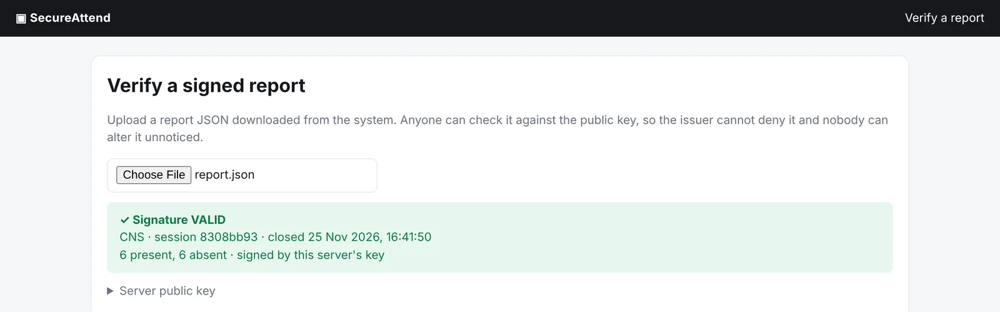

A QR attendance system where the code changes every ten seconds, every scan is signed by the student's own phone, and every record is chained so that edits show up. Proxy marking, screenshots, replays and database tampering are all caught.
Attendance decides exam eligibility, yet it is still taken by hand. A plain QR code doesn't fix that: it can be photographed and shared in seconds. This system makes a QR code useless to anyone who isn't physically present with their own phone.
Proxy marking
A friend logs in with an absent student's password. Here that fails: every scan must be signed by the absent student's own phone.
Shared screenshots
A photo of the QR code is forwarded to someone at home. It expires within 20 seconds and fails the time check.
Edited records
Someone with database access changes a row. The hash chain no longer matches, and the admin's integrity check points to that exact record.
02 · How it works
Four steps, nine checks.
From the classroom it looks like any QR system: show, scan, done. Behind each scan the server runs nine checks in order, and rejects the scan at the first one that fails.
Faculty starts a session
The projector shows a QR code that changes every ten seconds, each one signed with HMAC.
Student registers once
The phone creates a key pair that can't be exported. The server keeps only the public half.
Scan & sign
The phone signs the token, a timestamp and a single-use nonce with its private key.
Verify & chain
Valid scans are added to a SHA-256 hash chain. Closing the session produces an Ed25519-signed report.
POST /api/scan: every scan passes through this, in order
No custom algorithms: only standard primitives, each chosen for a specific threat. The protocol logic around them is written out in about 180 lines in crypto_core.py.
Authenticity · freshness
HMAC-SHA256
Only the server can produce a valid QR tag. Changing the time window or the session ID breaks it.
w = ⌊t / 10⌋
tag = HMAC(K_sid, sid ‖ w)[:16]
QR = sid.w.tag
Device binding
ECDSA P-256
Generated in the browser with WebCrypto, marked non-extractable. A friend who has the password still doesn't have the phone's key.
sig = Sign(d_phone,
token ‖ uid ‖ ts ‖ nonce)
Replay protection
Nonce + timestamp
Each signed request is valid once, within 60 seconds. A request captured and resent is rejected.
nonce ← 144 random bits
reject if seen(nonce)
reject if |ts − now| > 60
Key management
HKDF
One master key yields independent keys for each class and for wrapping the signing key. One leaked key exposes nothing else.
Memory-hard password hashing with a random salt per user, plus account lockout after five failed logins.
$argon2id$v=19$m=65536,t=3,p=4
$<salt>$<hash>
Integrity
SHA-256 hash chain
Each record includes the hash of the record before it. Edit one row and its hash stops matching. Recompute every hash after it, and the chain no longer matches the latest hash locked into each signed report.
04 · Red team
Twelve attacks, run live.
scripts/attacks.py attacks the running server the way a real student would, from replays and forged QRs to brute force and editing the database directly. Each attempt is rejected and recorded in the security log.
$ python -m scripts.attacks
Summary✓ Legitimate scan Attendance marked✓ Double scan Already marked present✓ Replay signed request nonce already used✓ Forged HMAC forged token (bad HMAC)✓ Proxy from friend's phone signature ≠ registered device✓ Re-bind device already bound to another device✓ Expired QR expired token (replay)✓ Student closes session 403 role cannot do this✓ Student reads admin API 403 role cannot do this✓ Account lockout account locked✓ Edited report signature INVALID✓ Naive DB edit #30 hash mismatch✓ Recomputed chain ≠ hash locked in signed report13/13 behaved as expected
One changed row in SQLite, and the integrity check points to the exact record.

Anyone can verify a signed report. Change one name and it comes back invalid.
05 · Screens
Built for the classroom.
Three roles, each seeing only what it needs. Faculty run sessions and see defaulters at a glance. Students see their own percentage. The admin handles device resets and integrity checks.
Student: registered device, scan result, attendance per course.
Faculty: students under 75% highlighted automatically.
06 · Stack
Small, readable, no magic.
Backend
Python · FastAPI · Uvicorn
Storage
SQLite
Frontend
Jinja2 · plain JS · CSS
Crypto
cryptography · hmac · hashlib · argon2-cffi
On the phone
WebCrypto ECDSA · IndexedDB
QR
qrcode (server) · html5-qrcode (scanner)
Web security
HTTPS · HttpOnly, SameSite=Strict cookies · strict CSP
Testing
pytest · httpx attack suite
07 · Threat model
What it doesn't stop.
Handing over the phone. If a student gives their own unlocked phone to a friend, no QR system can tell. That would need biometrics or a face check.
Very fast relays. A screenshot forwarded within the 10–20 s window could still work. Turning on the classroom-subnet check narrows this.
A compromised server. Whoever holds the master key can mint tokens, so the key lives only in a git-ignored .env with owner-only file permissions.
Next steps. WebAuthn passkeys for hardware-backed device keys, admin-approved device binding, and per-faculty signing keys.
Run it in one command.
Creates a virtual environment, seeds demo data, generates the keys and a TLS certificate, and starts the server on your Wi-Fi so phones can connect.
# clone and start
git clone https://github.com/kushalkou/cns-qr-attendance
cd cns-qr-attendance && ./run.sh
# in a second terminal
pytest -q # 7 passed
python -m scripts.attacks --fast